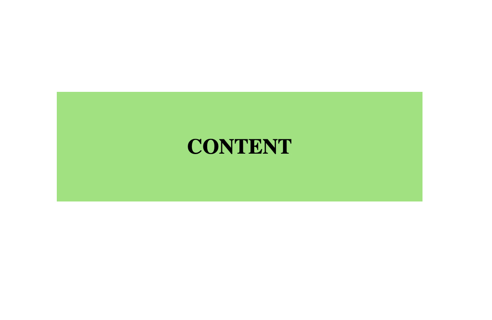

What is the difference between Margin, Border, and Padding?
A web page is made up of many boxes despite whether they look like boxes or not.
Each box consists of the margin, padding and border.
These three elements are surrounding the content, whether that be text, and image or a title.
follow along with the images!
Here we have the content... lets take a look at whats beneath the surface
- PADDING
- the padding is the negative space (empty) immediately beyond the content of this particular box. 
- BORDER
- The border is the line that separates the margin and the padding. The border doesn’t need to be visible
- MARGIN
- The margin is the negative space beyond the border

ANALOGY
An analogy for the margin border and padding is similar to a bed in a bedroom
If the person was the content, the padding would be the mattress (think like the mattress is soft and padded =padding!)
The border would be the bed frame
And the margin would be the room the bed is in.
In CSS you change the sized of these three elements… Is is a child in a single bed in a huge bedroom? Or is it a basketball player in a king bed in a small room?